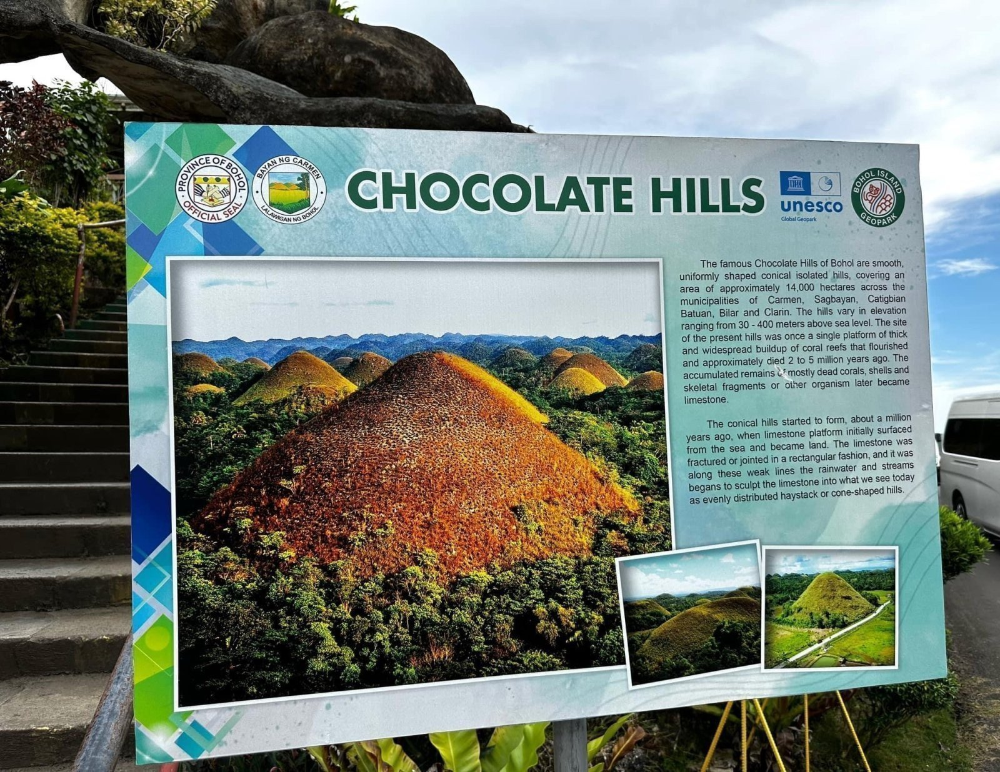

The Chocolate Hills in Bohol, Philippines, is a breathtaking geological marvel, renowned for their unique conical shapes and seasonal transformations. With over 1,200 hills spread across 50 square kilometers, these limestone formations captivate visitors not only with their stunning beauty but also with the rich cultural legends that surround them.
Origin of Chocolate Hills
The name "Chocolate Hills" comes from the striking brown color the grass takes on during the dry season, reminiscent of chocolate. This remarkable feature is the result of a complex geological history, shaped by tectonic uplift and erosion over millions of years. The hills, primarily composed of marine limestone, exhibit a distinctive dome-like appearance, formed by the combined effects of rainfall and groundwater erosion.
Local mythology adds depth to the hills' allure. Various legends explain their origins, enriching the cultural tapestry of Bohol.
According to one tale, two giants engaged in a fierce battle, hurling mud at each other. Their exhaustion left behind the mud, which solidified into the hills, symbolizing their epic struggle.
In another poignant story, a giant named Arogo fell in love with a mortal woman, Aloya. After her death, his tears transformed into the hills, reflecting themes of love and loss.
Another legend tells of a giant carabao that consumed spoiled food from the villagers, leading to its explosive illness and the creation of the hills from the aftermath.
These Folklores not only enrich local identity but also contribute to the Chocolate Hills' status as a significant natural and cultural.
Uniqueness of Chocolate Hills
One of the Hills unique characteristics is its dramatic color change throughout the year. From January to May, during the dry season, the grass covering the hills turns a rich chocolate brown, making them particularly stunning. In contrast, from June to December, the rainy season revitalizes the hills, turning them lush and green, resembling a mint chocolate color. This seasonal variation enhances the hills' beauty and offers visitors diverse experiences throughout the year.
The Chocolate Hills hold a special place in local culture, symbolizing Bohol’s rich heritage and identity. Festivals and artistic expressions often celebrate these natural wonders, showcasing the influence of both indigenous and Hispanic traditions. Through music, dance, and art, the hills are woven into the fabric of local life, deepening their cultural significance.
For those planning a visit, the best time to explore the Chocolate Hills is between March and June. This period offers clear skies and vibrant landscapes, with the hills at their chocolate brown peak. April, in particular, is noted for having the least chance of rain, making it an ideal time for outdoor activities and sightseeing.
Bohol’s Chocolate Hills are more than just a natural wonder; they are a blend of geological marvels, rich folklore, and vibrant local culture. Whether you're drawn by the breathtaking landscapes, the captivating legends, or the chance to experience Bohol's unique heritage, a visit to the Chocolate Hills promises an unforgettable experience. Plan your trip to discover this enchanting destination and immerse yourself in its beauty and history.